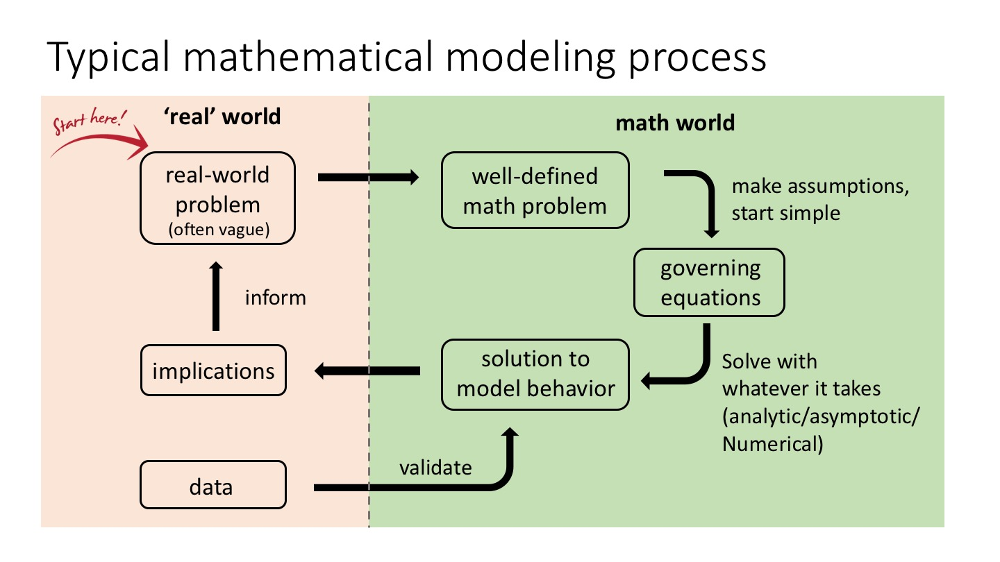

Math modeling flowchart
Published Dec 2016.

I created this flowchart for the typical mathematical modeling process that I go through, as part of a talk for undergraduate mathematics students. You can find a high quality pdf file here.
You are welcome to share and use it, please credit this page when doing so.